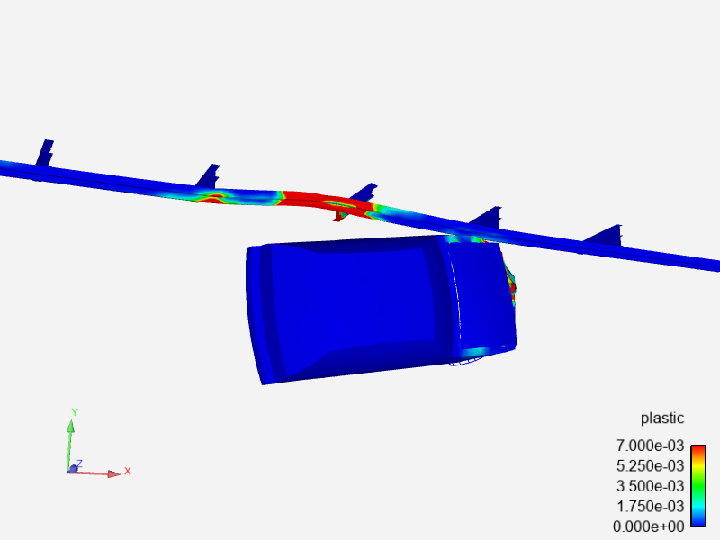
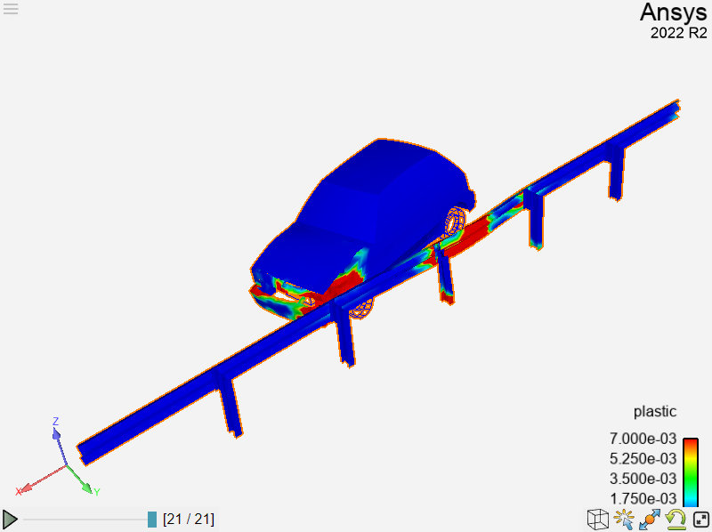
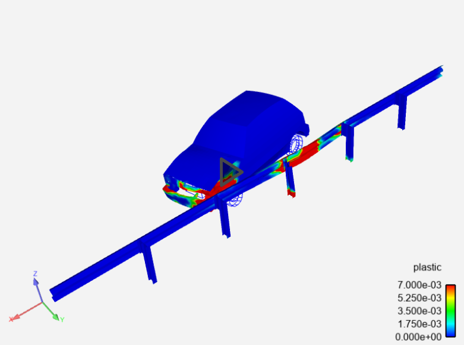

Note
Go to the end to download the full example code.
Renderables#
EnSight is a simulation results postprocessing engine with an advanced rendering and display component. PyEnSight provides direct, Jupyter Notebook/Juptyer lab-aware access to the rendering component through renderables. This example explores the variety of renderables that available.
Start an EnSight session#
Launch and connect to an instance of EnSight. This example uses a local EnSight installation.
from ansys.pyensight.core import LocalLauncher
session = LocalLauncher().start()
Load a time-varying dataset#
Load some data included in the EnSight installation, apply a displacement variable to the parts, and color them by a measure of plastic deformation.
session.load_data(f"{session.cei_home}/ensight{session.cei_suffix}/data/guard_rail/crash.case")
# Apply displacements
displacement = session.ensight.objs.core.VARIABLES["displacement"][0]
session.ensight.objs.core.PARTS.set_attr("DISPLACEBY", displacement)
# Color by the variable "plastic"
plastic = session.ensight.objs.core.VARIABLES["plastic"][0]
session.ensight.objs.core.PARTS.set_attr("COLORBYPALETTE", plastic)
# Adjust the palette range
plastic.LEGEND[0].RANGE = [0.0, 0.007]
session.ensight.view_transf.rotate(-36.0, 23.0, 0.0)
session.ensight.view_transf.fit(0)
Show an image renderable#
Show an image renderable. This renders the image at 800x600 pixels using four antialiasing passes. If this code is being run in a Jupyter IDE, the cell displays the PNG image.
image = session.show("image", width=800, height=600, aa=4)
Update renderable#
The Renderables class include several useful methods. The first is the
update method,
which regenerates the renderable.
This code adjusts the scene rotation and updates the display of the image in the scene.
session.ensight.view_transf.rotate(10.0, 0.0, 0.0)
image.update()
Display renderable in a browser#
All renderables display their results on web pages. The URL to the web page
is stored in the renderable URL property. You call the
browser method
to display the result of the renderable on a new browser tab.
print(image.url)
image.browser()
Download renderable#
The physical files that make up the display of the renderable reside in the
container/system running the EnSight instance. You can download these files
to the local system using the
download method.
Note
For an image renderable, this is a PNG file. But, depending on the type of the renderable, the file format could be some other type, such as TIFF, AVZ, or EVSN.
local_directory_pathname = "."
image.download(local_directory_pathname)
Show a deep pixel image renderable#
A deep pixel image is a TIFF file that has the part names and currently displayed variable values included at each pixel. For full effect, you must view a deep pixel image renderable on a web page.
deep_image = session.show("deep_pixel", width=800, height=600, aa=4)
Show an animation renderable#
An animation renderable is generated by rendering all the timesteps of the
currently loaded dataset into an MPEG4 container. You can set the size of
the animation and the playback rate in frames per second in the call to
the show method.
animation = session.show("animation", width=800, height=600, aa=2, fps=2.0)
Show a WebGL 3D scene renderable#
Create a 3D scene renderable and render it interactively in the web browser.
The scene is generated in AVZ format, which is what the
download method
would pull. By default, only the current timestep is captured, but if
you set the temporal parameter, it can be over all timesteps.
datasets.
Note
Because the geometry is generated in the EnSight session and downloaded to the browser for display, be careful when using this method with larger datasets.
webgl = session.show("webgl")
Interact directly with EnSight#
Use remote rendering with dynamic pixel transport to interact directly with the EnSight session. The keyboard and mouse interactions are sent directly to EnSight in this mode.
Note
This renderable relies on a persistent, low-latency web socket connection to the EnSight session. It is most useful when the EnSight session container has access to hardware-accelerated rendering and when datasets/geometry get larger. Multiple connections can be made to the same renderable (via HTTP). Those renderables are “shared” between all the viewers.
remote = session.show("remote")
Interact directly with a remote scene#
A remote scene is a renderable that is basically a wrapper around an EnSight scenario file. The current scene is exported and includes all active parts/variables. The viewer is the EnVision app accessed through the same remote rendering system as the “remote” renderable. It shares many of the same benefits as the remote renderable, without the overhead of an EnSight server process. If downloaded, the saved file is an EnVision EVSN file.
remote_scene = session.show("remote_scene", width=800, height=600, temporal=True)
Export raw content#
The render and
geometry methods are capable
of returning the raw file data directly, without the use of a web browser.
This example exports the raw file data for a PNG file and a GLB file.
pngdata = session.render(1920, 1080, aa=4)
with open("simple_example.png", "wb") as fp:
fp.write(pngdata)
glbdata = session.geometry()
with open("simple_example.glb", "wb") as fp:
fp.write(glbdata)
Close the session#
Close the connection and shut down the EnSight instance.
# sphinx_gallery_thumbnail_path = '_static/01_renderable_1.png'
session.close()